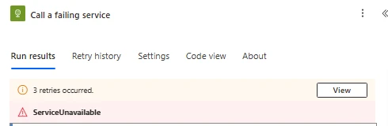

- Power Automate
- Level 4 · Reliable flows · 3 of 7
Retry policies and timeouts
Many failures are temporary: a service is busy, a network blip, a 429 "too many requests". Power Automate retries these automatically. Knowing the rules lets you make a flow patient where it should be and fast to fail where it shouldn't wait.
The demo

Retries
The first HTTP call goes to a test address that always answers 503 Service Unavailable. Its retry policy is Fixed interval, 3 retries, every 5 seconds.


| Policy | Behaviour |
|---|---|
| Default | Exponential back-off: waits grow longer between attempts |
| Exponential interval | You set the count and the minimum and maximum wait |
| Fixed interval | You set the count and one wait, as in the demo |
| None | Fail immediately; use it when a quick failure is better than waiting |
Retries happen only for temporary errors: 408 (timeout), 429 (too many requests), 5xx (server errors) and connection problems. A 400, 401 or 404 is never retried, because trying again won't change the answer.
Timeouts

The second call asks a test service to wait 10 seconds before answering, with an action timeout of 3 seconds. It still succeeded after 11 seconds. The action timeout limits the total time an action spends on retries and asynchronous (long-running) responses. It doesn't cut off a single request that is still waiting for its answer. Use it for actions that run a long time in the background, such as approvals, waits for a response, or APIs that reply "accepted, check back later".
New to this? Start from the basics optional
Transient error: a failure that goes away by itself if you try again a little later.
Back-off: waiting longer between each retry so a busy service has time to recover.
ISO-8601 duration: P starts it, T separates days from time. PT5S = 5 seconds, PT1H = 1 hour, P2D = 2 days.
Build it step by step optional
- Add an HTTP action calling a test endpoint that returns 503.
- Open Settings > Networking > Retry policy: Fixed interval, Count 3, Interval
PT5S. - Test, open the failed action and look at Retry history.
- Change the policy to None and test again: it fails in under a second.
- Add a Compose after it with Run after set to has failed to handle the final failure.
Delay and Delay until
Sometimes a flow should wait on purpose: give a file time to finish saving, space out calls to a busy service, or send a reminder later.
| Action | Waits | Example |
|---|---|---|
| Delay | A fixed amount of time | Count 2, Unit Minute, before reading an Excel file that was just uploaded |
| Delay until | Until a date and time | addDays(utcNow(), 3) for a reminder in three days |
A waiting run still counts toward the 30-day run limit. For waits longer than a few days, a scheduled flow that checks what is due is usually safer than one long run.
Common mistakes
- Retrying actions that create records. A retry after a timeout can create a duplicate; make the target check for an existing record first.
- Setting huge retry counts on a flow that runs every minute. Runs pile up while each one waits.
- Expecting the action timeout to cancel a slow synchronous request (see above).